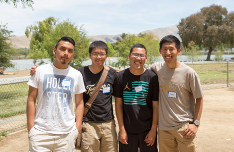

Our Mission
The mission of InterHigh is to equip local Christian youth and raise them
to become Biblically-minded Christ-followers.
In addition, we are mindful that some students might not be familiar with
Christianity. Thus, we incorporate Christian foundations in our instruction
so that they may come to a personal knowledge of Christ.
We provide Sunday programs in a setting where the students can be mentored
by youth workers who are passionate about youth ministry. Our hope is that
our students will enter college, and life after college, armed with the
ability to defend their faith and able to make a positive impact in the
lives of the people around them.
Finally, we hope that as we train and equip our youth, they will, in turn,
become servants and a blessing to their home churches.
A Few of Our Interhigh Churches


All Interhigh Churches
California:
Bayside Cambodian Fellowship Church (Alameda, CA)
Pole Line Road Baptist Church (Davis, CA)
East Bay Korean Christian Reform Church (El Cerrito, CA)
East Bay Presbyterian Church (Fremont, CA)
Gracepoint Fremont (Fremont, CA)
Christian Grace Church (Hayward, CA)
Iglesia Bautista La Roca (Hayward, CA)
Crystal Korean Baptist Church (Livermore, CA)
TLC (True Light Church) Livermore (Livermore, CA)
The Aroma of Jesus Mission Church (Los Angeles, CA)
Somang Presbyterian Church (Los Angeles, CA)
Tri City: Salvation Army (Newark, CA)
Alameda Hebron Baptist Church (Oakland, CA)
Bay Area Karen Baptist Church (Oakland, CA)
Truth Gospel Church (Oakland, CA)
Indonesian Evangelical Christian Church (Riverside, CA)
Chinese United Methodist Church (Sacramento, CA)
First Chinese Baptist Church (Sacramento, CA)
San Diego Chinese Mandarin Church (San Diego, CA)
Assembly of Living God (San Francisco, CA)
Chinese Grace Church (San Francisco, CA)
Grace Chinese (San Leandro, CA)
Life Change Baptist Church (San Leandro, CA)
Heaven’s Opening Church (San Lorenzo, CA)
Minnesota:
Evangelical Formasan Chruch of the Twin Cities (Minneapolis, MN)
Texas:
Hyde Park Baptist Church (Austin, TX)
Northwest Chinese Church (Austin, TX)
Settlement Home (Austin, TX)
Vietnamese Unity Baptist Church (Austin, TX)
A Youth Ministry in Every Church
Let us know you're interested in Interhigh today!